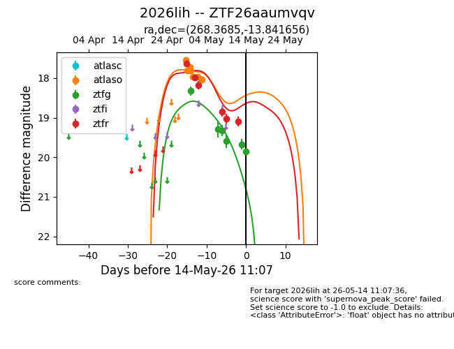
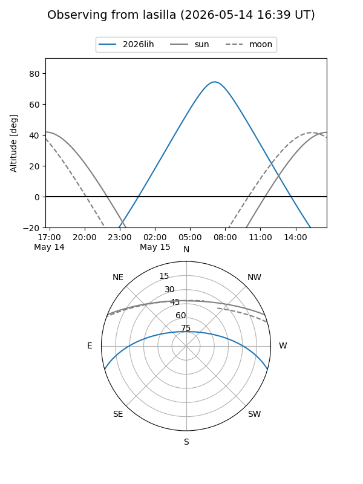
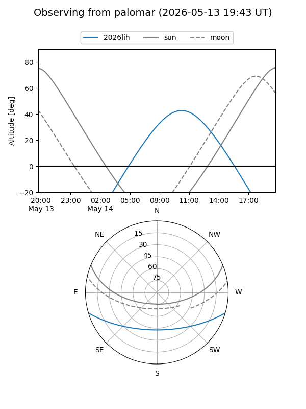
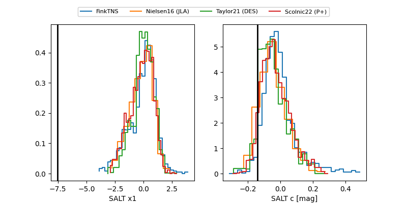

2026lih
Target 2026lih at 2026-05-14 11:09
Aliases and brokers:
FINK: link
Lasair: link
ALeRCE: link
TNS: link
YSE: link
alt names
ZTF26aaumvqv (ztf,fink_ztf)
2026lih (tns,yse)
Coordinates:
equatorial (ra, dec) = 268.3685,-13.84166
equatorial (HMS+DMS) = 17:53:28.44,-13:50:29.96
galactic (l, b) = (13.9312,+6.15065)
Flags:
Photometry:
last atlaso=18.04, ztfg=19.86, ztfr=19.10
7 atlaso, 6 ztfg, 6 ztfr detections
Lightcurve

Visibility


Additional plots
